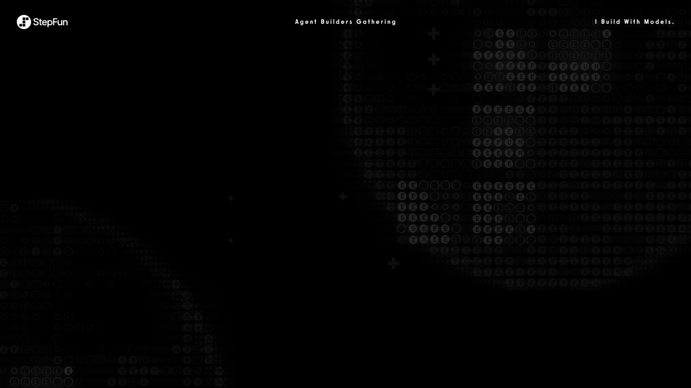
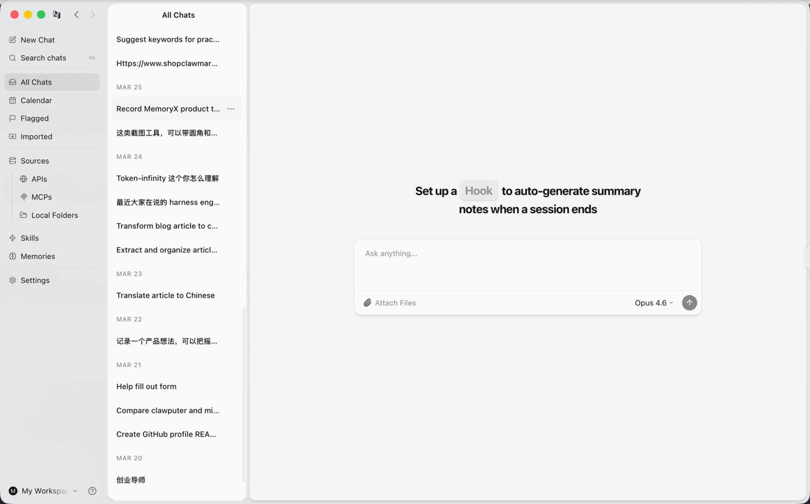
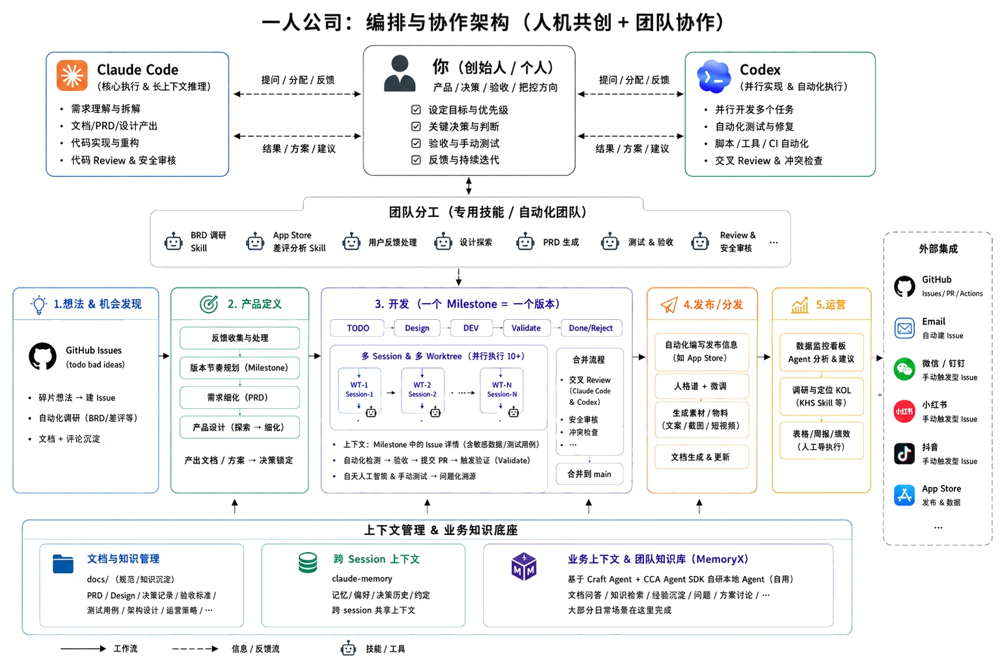

开场
我曾是产品经理,不会写代码。
但因为 Agent ——
我也走上了一人 × 多 Agent 的路。

从 Demo 到生产的协作与踩坑实录
开场
我曾是产品经理,不会写代码。
但因为 Agent ——
我也走上了一人 × 多 Agent 的路。
关于我 · 前 Motiff AI 产品负责人 → 全职一人公司



写代码的不是我,是我的 Agent。
这不是试用,是我的工作方式
从 1 月底开启一人公司起,每天都在编排 —— 还没算 Codex,实际只多不少。

同一件事 —— 只是团队换成了一支 Agent 团队。
深入使用者的真实流水线 · 不讲架构名词,讲我每天怎么干
我不写代码,我编排 Agent 协作 —— 我管的是一支 Agent 团队。
代码质量 · 我印象最深的几件事,其实是同一个毛病
它特别爱「猜」,
而不肯老实「看」。
一个人 + 一群 Agent,
真正的敌人不是产能,
是失控。
2C 场景里,速度和智能几乎同等重要。
阶跃为何对超级个体友好 · 我是怎么用阶跃的
云端多模态 · 正在接入 选的不是榜一,是性价比和省心。
我没有变成十个工程师,
我还是那个产品经理 ——
只是我的团队,现在是
一支 Agent 团队。


陈正豪 Bryant